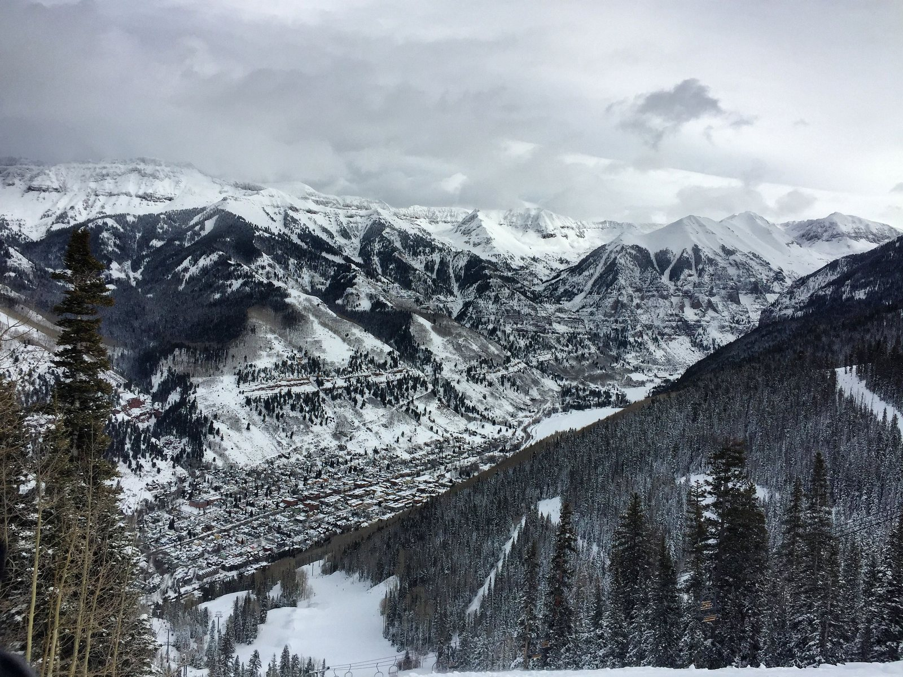
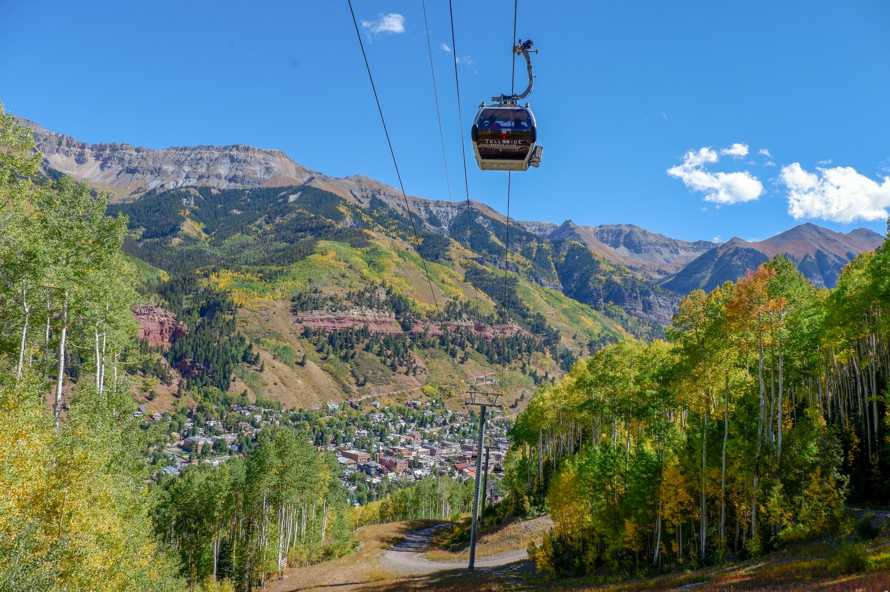
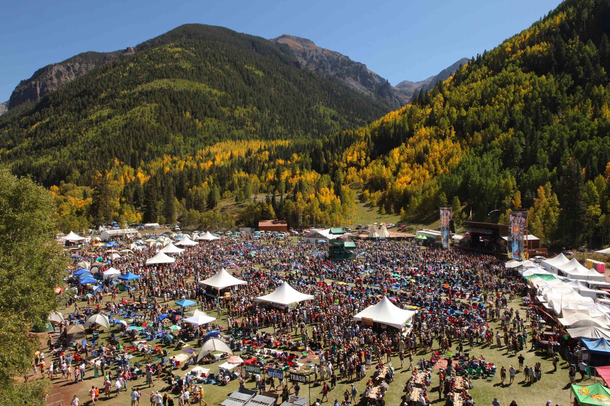
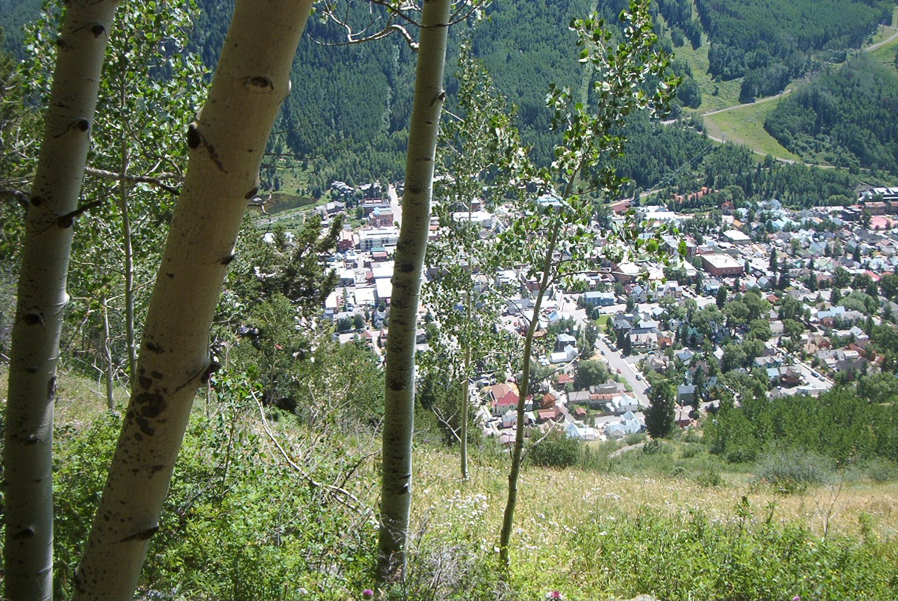
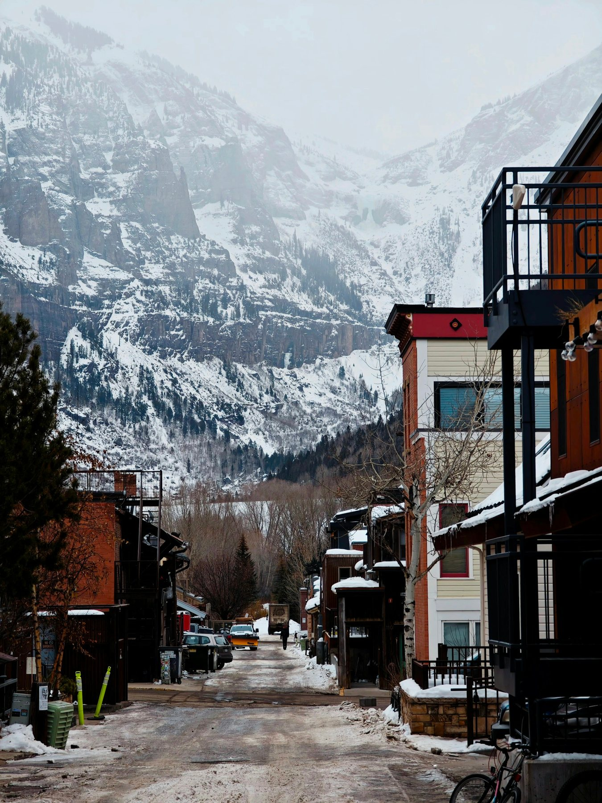

01
Dining
Garrett's picks by category, from the first coffee to the last bar, Gorrono Ranch and Allred's included.
His picks


Telluride Life
The named ski terrain, the trails that start in town, the festival calendar and the free gondola, sorted by season, with the official page for each.
Season by season
Telluride sits in a box canyon, so most of it starts at the edge of town: the Bear Creek Trail at the south end of Pine Street, the Jud Wiebe and Cornet Falls at the top of Aspen Street, and the gondola with the Oak Street Lift beside it.
This is the list Garrett and Jessica give clients who come out to look at property, sorted by season. It names who runs each thing and links their own page, because hours, prices and season dates change every year and they publish them.
Each section also links the part of the valley it happens in, from the Town of Telluride and Mountain Village to Ophir and Trout Lake, in case a trail turns into a place you want to live.
Winter
The ski area runs in partnership with the US Forest Service on National Forest land, and it opened in 1972. These are the names on the resort's own trail list worth knowing before you go; the resort publishes the trail map, the daily lift status and the rules for its hike-to terrain.
Lifts 14 and 15
A big, open bowl above treeline that opened in 2008. The Bear Creek Overlook sits at its bottom, on the boundary, looking down into Bear Creek.
Gold Hill Express, Lift 14
The high ridge served by the Gold Hill Express: Little Rose, Millions, Electra, Dynamo, Buzz's Glade and Andy's Gold.
Lift 15, then a hike
Expert-only, hike-to and not open every day. Chute 1 drops from a gate at the top of the Revelation Lift; Chute 2 and Chutes 6 to 10 are reached by hiking the Gold Hill access road. Chutes 3, 4 and 5 are permanently closed.
Lift 12, then a long hike
A 13,320-foot peak, by the resort's figure, with in-bounds, hike-to terrain on its north face: Tram Shot, Sunrise and Electric Shock drain toward Black Iron Bowl.
Lift 12, then out Prospect Ridge
An upper-mountain bowl named for an old mining claim, with the Mountain Quail couloir, Genevieve, Lakeview, Westlake, Dihedral Chute and Jello's Bowl.
Lift 12, then a hike
The locals' hike-to stash, Jackpot and Audrey, through a gate on Upper Galloping Goose, looking down on the ghost town of Alta.
Prospect Express, Lift 12
Beginner and intermediate runs (Madison, Magnolia, Sandia) and the jumping-off point for the hike-to terrain.
Lifts 6, 9, 14 and 15
The resort's best-known intermediate run, just over three miles down the spine of the mountain from high on Gold Hill, with Utah's La Sal Mountains in view on a clear day. In Mountain Village, See Forever Village is also the name of a condo and cabin community.
Plunge Lift, Lift 9
The classic expert line facing town, with the steep bump runs off the same lift: Kant-Mak-M, Spiral Stairs, Mammoth and Bushwacker.
Prospect Express, Lift 12
A long, gentle beginner run from the top of Prospect down to Mountain Village. Three other things in Telluride share its name.
Under the Village Express, Lift 4
A historic ranch turned mid-mountain lodge off Misty Maiden, Butterfly and Village Bypass, with a big sunny deck the resort calls Snow Beach and the Wilson Range in view. It is Garrett's pick for lunch on the mountain; see Dining.
Ute Park Express, Lift 4 or the gondola
Ute Park for beginners and intermediates, plus Lower Hoot Brown and Hannah's Park.
Two base areas: in the Town of Telluride, the Oak Street Lift (8) beside the gondola station and Lift 7 by the Carhenge lot; in Mountain Village, the Village Express (Lift 4) in the core and the Chondola up from the Meadows. Current conditions: the resort's lift and trail status, trail maps and hike-to terrain and boundary and uphill rules.

Winter, off the lifts
The Telluride Nordic Association runs the Nordic Center in the Town Park pavilion, with rentals, lessons and trail information. On the mountain, the Top-A-Ten trails sit at the top of the Sunshine Express (Lift 10).
The resort runs guided snowshoe tours, and there are designated snowshoe trails from both towns.
Telluride Wranglers runs sleigh rides near Placerville, along with trail rides, wagon rides and pack trips.
Telluride Outside, local since 1984, and Telluride Outfitters both run guided snowmobile tours.
Bridal Veil Falls reopened to climbers in the winter of 2008 to 2009, under a public access license the Trust for Public Land negotiated with the Idarado Mining Company. Climbers sign in at the kiosk, keep clear of the powerhouse and rappel down; go with a guide.
Telluride Helitrax, Colorado's original heli-ski operation, has flown here since 1982.

Getting around
The Town of Mountain Village runs the gondola between the two towns, and it costs nothing to ride. It opened in 1996, built to help air quality while the ski area and Mountain Village grew, and the Town calls it the first and only free public transportation of its kind in the United States.
It stops at four stations (Telluride, San Sophia for Allred's, Mountain Village Center and Market Plaza) and tops out above 10,500 feet. It closes for maintenance in the spring and fall shoulder seasons, when SMART runs a free bus between the towns; the Town of Mountain Village publishes the dates and hours. In winter the Chondola links Mountain Village Center with the Meadows: foot passengers ride free, and skiers need a lift ticket.
For a buyer it redraws the map: from a home near a station in either town, the other town is a free ride away. A replacement gondola is in planning, with SMART leading the project.
Galloping Goose
Ask for the Galloping Goose in Telluride and you could mean any one of them.
The Rio Grande Southern built the first Goose from the body of a Buick in 1931: a gasoline railbus that carried the mail, passengers and freight through the San Juans until the 1950s. Goose No. 4 is on display at the San Miguel County Courthouse in Telluride and spends winters at the Ridgway Railroad Museum.
The Town of Telluride's free in-town bus. The Town Loop runs every day of the year and stops at any street corner on its route.
Galloping Goose Trail #499 runs 17.6 miles from Lizard Head Pass toward Telluride, much of it on the old railway grade and past a restored trestle, for hikers, horses and bikes. The Keystone Gorge loop starts from it near Lawson Hill.
Galloping Goose is the long beginner run from the top of Prospect down to Mountain Village, and Upper Galloping Goose holds the gate to Bald Mountain.
Summer
These start in town or a few minutes from it. Each one links its Forest Service or Tourism Board page, which carries the current conditions and closures.
Starts at the south end of Pine Street on the Town's Bear Creek Preserve and climbs about two miles to the Wasatch Trail junction, with Bear Creek Falls a short way beyond. The San Miguel Conservation Foundation, working with the Town, acquired the canyon and donated it in 1995. Little Hawaii, the mossy waterfall grotto locals talk about, sits off an unofficial side path from this trail, with no maintained route.
A loop from the top of Aspen Street to Tomboy Road, with about 1,300 feet of climbing and a bench at the overlook. It is named for the Forest Service recreation manager who planned it and died in 1986, before it was finished. Open to hikers, horses and bikes.
From the top of North Aspen Street, go straight at the Cornet Creek bridge (left is the Jud Wiebe) for about 0.6 mile to an 80-foot fall. The footing is loose and scrambly.
At 365 feet, Colorado's tallest free-falling waterfall, at the east end of the canyon. A privately owned historic power plant sits at the top, so respect it. The road is four-wheel drive only, and Black Bear Pass above it runs one way, downhill. The Forest Service trail carries on past the powerhouse into Bridal Veil Basin, where a steep spur climbs past old mining buildings to an overlook above Blue Lake; the land around the lake is private. In winter, the Tourism Board advises against hiking to the falls because of rockfall and avalanche risk.
An easy, dog-friendly path along the river through town. To the east it joins the Idarado Legacy Trail, with mining-history signs toward Bridal Veil and the Pandora Mill; to the west, the Valley Floor trails; and the Boomerang Trail climbs from it to Mountain Village.
From Bear Creek up to the divide with Bridal Veil Basin, through alpine meadows with wildflowers around mid-July. It loops with the East Fork of Bear Creek and the Bridal Veil trails.
A 2.2-mile loop from the Lawson Hill area: west on the Galloping Goose Trail, across the San Miguel River on two footbridges hung with prayer flags, along the river, then a short, steep climb through aspen back to the Goose.
Leaves the Jud Wiebe and runs to a trailhead on the Last Dollar Road, into the Mount Sneffels Wilderness. It is sunny, so it is a good one early and late in the season; bikes only on the eastern section.
For maps and trail information across the area, the Norwood Ranger District is the Forest Service office for Telluride, and its Telluride area page lists the trails, campgrounds and wilderness rules.

Summer, the high lakes
Alta Lakes and Hope Lake both sit up rough roads that need a high-clearance vehicle for the last miles, and both are worth the drive.
Three high lakes past the ghost town of Alta, up a rough road that needs high clearance. The Forest Service manages designated, first-come campsites there, and the lakes are a named fishing spot. The third lake is private, home to the Observatory at Alta Lakes, a rustic historic cabin at timberline rented for stays and events.
One of the most popular wildflower hikes in the area: a steep early climb with views of Trout Lake and Vermilion Peak, with a high-clearance road for the last miles. Older guides call it Lake Hope. Forest Service, Hope Lake #410.
The high valley itself, from Ophir to Trout Lake, has its own page: Ophir and Trout Lake.
Summer, farther out
A drive from town, on Forest Service land. Wilderness areas allow no bikes or motors, and private land sits inside several of these basins, so read the official page before you go.
The standard route up 14,017-foot Wilson Peak, the mountain on the Coors can, starts at the Rock of Ages Trailhead at the end of Forest Road 645 (Elk Creek Road), off the Silver Pick Road. Colorado Mountain Club volunteers and the Forest Service rerouted it in 2009 around private land in Silver Pick Basin to restore public access. The trail ends at the 13,400-foot Rock of Ages Saddle; the summit beyond is a Class 3 scramble. No camping at the trailhead, and no horses on the private-land segment.
About ten miles southwest of Telluride: Wilson Peak, Mount Wilson and El Diente, and Lizard Head itself, a 400-foot tower of rotten rock reputed to be among the most dangerous climbs in Colorado. Lizard Head Trail #505 leaves from Lizard Head Pass, past the Bilk Creek waterfalls. Wilderness rules apply: no bikes and no motors.
From the trailhead off Fall Creek Road into the Lizard Head Wilderness. It loops with the Elk Creek and Wilson Mesa trails and carries on over a saddle to Navajo Lake.
The unpaved back way between Ridgway and Telluride, a summer and fall drive through aspen forest with views of the Sneffels Range and Wilson Peak; the Tourism Board says it needs a high-clearance four-wheel-drive vehicle. Two of the areas Garrett covers sit along it: Deep Creek Mesa near Telluride, and the ranch land of Hastings Mesa toward Ridgway.
Dave's Mountain Tours, here since 1995, runs jeep tours over Imogene Pass, Ophir Pass and the Last Dollar Road, for anyone who would rather not drive them. Telluride Outfitters rents jeeps and runs RZR tours.
The Ophir Wall is still a climbing area. For rock, ice or the via ferrata, go with one of the guide services under Gear and guides.
More summer
A free, expert-only cabled traverse across the cliffs at the east end of the box canyon, beneath Ajax Peak, built by local ironworker Chuck Kroger and traveled east to west. Go with a guide.
Bikes are allowed on the Galloping Goose, Jud Wiebe, Wasatch, Bridal Veil and Blue Lake trails and the eastern part of Deep Creek, never in the Lizard Head or Mount Sneffels wildernesses. The resort runs the Telluride Bike Park and summer trails on the ski area, one of them also called See Forever; check the Bike Park page before you plan around it. For an easy ride, take the paved Valley Floor bike path.
Telluride Golf Club, an 18-hole, par 70 course on Turkey Creek Mesa and among the highest-elevation courses anywhere, is limited to members of the Telluride Ski & Golf Club and their guests; guests of the Peaks Hotel can play with a confirmed stay. For a public round, plan a day trip: Divide Ranch & Club in Ridgway, The Bridges in Montrose, a semi-private club on a Nicklaus Design course, or Devil's Thumb in Delta.
Roudy Roudebush has led rides here for four decades; his outfit now trades as Telluride Horseback Adventures. Telluride Wranglers rides near Placerville, Baker Ranch Horseback Adventures about 30 minutes from town, and Many Ponies Outfit from its ranch in Norwood. For a day trip, Circle K Ranch near Dolores rides from its guest ranch.
You need a Colorado fishing license; Colorado Parks and Wildlife sells them and publishes the Colorado Fishing Atlas. Stay off private river frontage. Guides: Telluride Outside, Telluride Fly Fishers, Telluride Outfitters and RIGS Fly Shop in Ridgway.
Telluride Outside and Telluride Outfitters both run rafting trips and paddleboarding in summer, along with their fishing and four-wheel-drive tours.

Festivals
Dates move a little every year, so this is the usual order, with each festival's own site for this year's dates. The two big music weekends, Bluegrass in June and Jazz in August, are in Town Park.
Late May
Memorial Day weekend.
June
In Town Park.
June
Late June into July
Telluride Chamber Music has presented concerts since 1973, through the year as well as at the festival.
Around the Fourth of July
A Sheridan Arts Foundation event.
August
In Town Park, produced by the Telluride Society for Jazz, a nonprofit since 1991.
Labor Day weekend
September
Early October
October
The Tourism Board keeps the whole festival and events calendar. If you plan a property visit around a festival weekend, sort out the stay first: Luxury Rentals.

With kids
Most of it happens at Town Park in town, on the mountain or at a camp. Programs change every year, so each line links the people who run it.
The resort's Cubs Camp Nursery takes infants and toddlers, its ski school runs lessons, and in summer it runs kids' camps.
The Town Park Pool runs a summer season with open swim and lap swim, and Parks and Recreation runs youth programs such as baseball and a swim team. The line-up changes each year.
San Juan Outdoor Adventures runs kids' camps along with its guided climbing and hiking.
Telluride Theatre, formed when Telluride Rep merged with SquidShow Theatre, runs productions and education programs, and the Telluride Society for Jazz runs its Student All-Stars program.
Getting here
Fly into Telluride Regional, minutes from town, or into Montrose Regional and drive. Grand Junction and Durango are farther out.
Stay in either town and you can do without a car: the free gondola between them, the free Galloping Goose in town, and SMART, the regional transit authority voters approved in 2016, for buses around the region. Garrett can book the transport in and out; see Concierge Services. Flights and services: Telluride Regional Airport, Montrose Regional Airport and the resort's travel page.
Gear and guides
Each name links the shop or outfitter's own site, where this season's trips and rentals are listed.
A locally owned gear shop on East Colorado Avenue, open more than 30 years, that also makes its own Colorado-built packs and apparel.
Gear rental and apparel, with shops in Telluride and Mountain Village; the resort sends skiers there for rentals.
Guiding since 1984: rock and ice climbing, the via ferrata, backcountry skiing and the fourteeners.
Mountain guides who lead the via ferrata, listed with the Tourism Board.
Guided climbing, the via ferrata, hiking and kids' camps.
Local since 1984: snowmobile tours in winter; fly fishing, four-wheel-drive tours, rafting and paddleboarding in summer.
Snowmobile tours in winter; RZR tours, rafting, jeep rentals, paddleboards and guided fly fishing in summer.
Jeep tours since 1995 over Imogene Pass, Ophir Pass and the Last Dollar Road.
The Forest Service office for the Telluride area: maps and trail information.
More Telluride Life
01
Garrett's picks by category, from the first coffee to the last bar, Gorrono Ranch and Allred's included.
His picks

02
Lodging, transport, private chefs and a day on the mountain, set up around your visit.
What he arranges

03
He finds and negotiates the rental, so you can stay in the area you are thinking of buying in.
Find a rental
Resources
Hours, seasons, prices and conditions change every year. These are the people who publish them.
Contact
Tell Garrett when you are coming and what you want to do while you are here. Call or text 970-708-1155, or send a note through the contact page, and he will fit the showings around it.